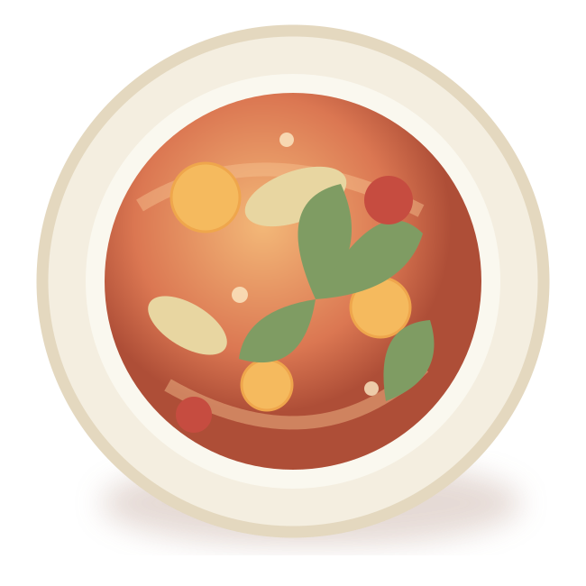
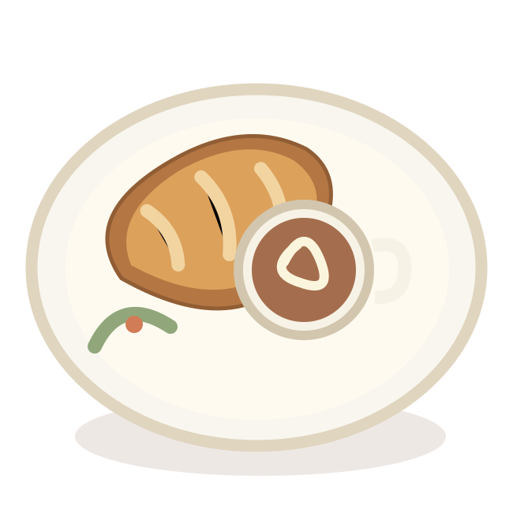
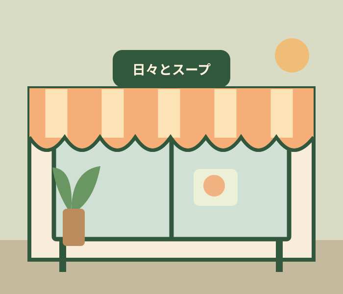

人気 No.1
SOUP / 季節のおすすめ
GOOD FOOD, GOOD DAYS.
ほっとするひとさじと、焼きたてのパン。
からだにも、こころにも、やさしいごはんを。

たっぷり野菜で01 わたしたちのこと
A LITTLE WARMTH
IN EVERY BOWL.

GOOD MORNING!忙しい日にも、少しだけ自分を大切にする時間があっていい。
「日々とスープ」は、季節の野菜と手間ひまかけたスープを届ける、街の小さなお店です。
特別な日じゃなくても、うれしい。
そんな何気ない食卓を、ここから。
その時季に一番おいしい
野菜を、たっぷり。
素材の味が引き立つよう、
じっくりていねいに。
ひとりでも、だれかとでも。
いつでも帰ってこられる場所。
03 日々のおたより
2026.10.12 / 季節のこと
2026.09.28 / お店のこと
04 お店のご案内

きょうも、いい日に。